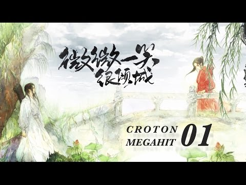

「微微，來忘情島，我們把婚離了。」
貝微微一上游戲，就看見游戲裡的「老公」真水無香發過來這樣一條消息。微微不由有點傻眼。不是吧，不過是宿舍寬帶壞了修了半個月，才這十幾天的功夫，就「情變」了？
微微老半天才回過去：「為什麼呀？」
真水無香：「微微，抱歉了，原因你別問了，我送你一套仙器裝備做為補償。」
還有贍養費？微微有點發囧。「不用了啦。」
遊戲裡結婚本來就當不得真的，當初會和真水無香結婚，也是為了做任務，有個任務只能夫妻去做，於是幫派裡的單身男女們紛紛結婚，
真水無香發了條消息問微微能不能和他結婚，微微想了想就同意了。
到現在結婚也有半年了，雖然微微從不肉麻兮兮的老公來老公去，一直直呼真水的名字，但是合作默契，並肩做戰多了，似乎也有點革命感情了。
然而遊戲嘛……
微微回消息過去：「我馬上就過去。」
微微游戲裡的人物「蘆葦微微」騎上馬，開始向忘情島奔去。
「蘆葦微微」是一個一身勁裝的紅衣女俠。
微微玩的這款《夢游江湖》游戲是目前市場上最熱的武俠網游之一，其實這款游戲其他方面並沒有什麼突出之處，唯獨美工非常強大，
角色也特別多，男女角色各有18個可供選擇。微微選擇的紅衣女俠是比較少有人選的，倒不是說女俠外表不漂亮，而是因為她的武器是一把巨大的刀。
巨大的刀，比起優雅的翠玉笛子，比起舞動的雪白絲帶，比起秋水如泓的軟劍，比起峨嵋刺，實在很沒美感，很沒女人味，所以選擇的女孩子很少，但是微微喜歡，微微覺得很彪悍，很符合她的形象。
跑到忘情島，兩人一起喝下忘情水，系統宣布：「蘆葦微微」與「真水無香」感情破裂，宣布離婚，從此男婚女嫁各不相干。
真水無香要給微微一套仙器裝備，微微點了取消，沒有接受，發了個笑臉，紅衣女俠很豪邁的走掉了。
結果第二天中午，微微吃完午飯上線，幫派裡交情比較好的一個女孩子雷神妮妮就發消息過來：「微微，怎麼回事？你和真水離婚了？聽說他晚上八點要和小雨妖妖結婚哎！」
微微：「……」
雷神妮妮：「真的離了啊？」
微微：「是啊。」
雷神妮妮：「好可惜哦，真水人滿不錯的，沒想到也會為色所迷啊，不過那個小雨妖妖的確滿漂亮的哦。」
妮妮所說的漂亮當然不是指遊戲人物，而是指現實中的。三個月前，游戲公司舉辦了一次玩家真人秀評選活動，
得票前三的玩家會得到高級套裝，小雨妖妖憑著幾張照片，一段視頻，以超高的人氣奪冠，這事立刻就轟動了微微所在的服務器，小雨妖妖也成為本服眾色狼垂涎的目標。
「前夫」轉眼就娶了別的女人，雖然和真水只有一些革命感情，微微還是忍不住鬱悶了，用頭磕桌子（這孩子鬱悶就這樣……），大喊：「不帶這樣的，以貌取人啊！！！！！」
這句話微微不是在游戲裡喊的，而是在宿舍裡，於是微微立刻被上鋪用枕頭砸了。
「貝微微！你這個名副其實的大美女還這麼喊，我們還要不要活了。」
的確，貝微微是美女，而且是超級大美女。可是美女也分好多種的，有優雅型的，有知性型的，有甜美型的，有溫柔型的，有賢淑型的……
還有微微這種——花瓶型的……
雖然微微一直好好學習天天向上努力向學識型靠了，然而……
美艷的眉眼，勾人的眼波，永遠嫣紅的唇色，火爆的身材，貝微微就算穿著理工大學那套很挫的校服出去，也不會有人覺得她真是名牌大學的大學生。
微微想起了生平恨事，繼續用頭磕桌子。
電腦裡雷神妮妮繼續八卦：「以前聽說小雨妖妖要嫁給等級榜上的那誰，沒想到會跟真水一起哎，不過前陣子常常看見真水和她一起練級。」
果然是在她不在的時候發展了「奸情」，微微發了個黑乎乎燒焦的表情過去。
「其實也不怪真水拉，微微啊，其實……」
「其實什麼？」微微磕完桌子了，拿起茶杯喝水，單手打字。
「其實……你操作這麼強大，PK榜上排第六，而且從來不問男的要裝備，其實大家都懷疑你是人妖哎！」
「噗！」微微把水噴顯示屏上了。
晚上八點整。
紅衣女俠背著大刀威風凜凜的站在長安城朱雀橋上。
這是結婚時花轎必經之處。
《夢游江湖》裡結婚可以很豪華可以很樸素，當初微微和真水結婚就很樸素，就去月老那公證了一下，那時候大家都窮嘛，而且是為了任務而結婚的，不必太在意形式。
而今天真水和小雨妖妖結婚的場面無疑是超豪華的。
上百發的禮花，鑼鼓開道，八人抬花轎游街，高級酒樓包場婚宴，據說婚宴現場每人還會派發888金的紅包。
遊戲裡早就為了這場婚禮議論紛紛了，畢竟小雨妖妖名氣在那，而真水無香也不是無名之輩，據說這事連別的服的玩家都驚動了，還有人注冊了小號來看婚禮的。
朱雀橋上，紅衣女俠繼續一動不動的站著，身影單薄，表情肅殺。
此時此刻，世界頻道已經炸了。
『世界』[花吹花雨]：大家看到沒有，我看見真水無香的前妻站在朱雀橋上！
『世界』[莪愛你]：看見叻，莪看見叻。
『世界』[傷心橋下春波綠]：看見了，歎息，我覺得她的背影好悲傷。歎世間，從來只見新人笑，哪曾見得舊人哭。
『世界』[哦呵呵]：我靠，又見火星文，老子最討厭火星文
『世界』[◎olo◎]：早就看到了，我就站在她邊上，哇塞，今天有熱鬧看了！我覺得她要搶親。
『世界』[一賤九州寒]：支持蘆葦微微搶新郎！！！小雨妖妖歸我！！！
『世界』[莪愛你]：吙煋攵怎仫啦，地浗攵很叻鈈起仫，伱煋浗歧視！
『世界』[巧克力奶茶]：支持蘆葦微微搶新郎！一賤滾一邊去，小雨妖妖是我的！
『世界』[哦呵呵]：……
接著打抱不平的出來了。
『世界』[anny]：雖然小雨妖妖是美女，可是我也要說，這事她做得不地道，搶人家老公還這麼招搖，不怕天譴哦。
『世界』[霹靂叫哇]：是啊，蘆葦微微人挺好的，滿仗義的。
『世界』[傷心橋下春波綠]：你看蘆葦，傷心得一句話都不說。
『世界』[稻草520]：第三者……卿本佳人……何必呢
『世界』[小雨妖妖不要臉108]：嘿嘿，為什麼這麼招搖，搶了人家的老公當然要出來現現啊，小雨妖妖不要臉不要臉不要臉不要臉不要臉不要臉不要臉不要臉，￥％％￥※×……（髒話被系統屏蔽）
這個「小雨妖妖不要臉108」是小雨妖妖的死對頭，不知道有什麼深仇大恨，平時沒事都會出來罵幾句，據說也被殺過很多次，但是越殺越勇，被禁言了就重新注冊，據說他ID後面的數字就代表被禁次數。
此人一出，小雨妖妖的親友團也忍不住了。
『世界』[小雨霏霏]：那個不要臉閉嘴！還有，誰說妖妖是第三者，不要太看得起自己了，夠格讓我們妖妖做第三者嗎！！！
『世界』[小雨青青]：誰要來搶親試試啊，不要以為上了PK榜就了不起，我們小雨家族都在這裡，就怕人不敢來呢！
『世界』[wsn]：上PK榜的女人肯定是巨型恐龍，真水的選擇沒錯。
隨著世界頻道炸頻，人民群眾紛紛跑往朱雀橋。
貝微微從洗手間裡出來，走到自己的電腦前，就看到這麼一副景象，紅衣女俠的周圍重重疊疊擠滿了人，但是很有默契的在女俠周圍空出一個圈來，讓女俠孤獨的，背影淒涼的站在中間。
然後周圍那些人頭頂不停的冒出字來，頻率最多的是——「支持蘆葦微微搶親！支持蘆葦微微搶親！支持蘆葦微微搶親！支持蘆葦微微搶親！支持蘆葦微微搶親！支持蘆葦微微搶親！支持蘆葦微微搶親！支持蘆葦微微搶親！」
微微目瞪口呆。
她不過是上了遊戲，然後站在朱雀橋上，然後去上了個廁所，最多不過五分鍾，發生了什麼事了？
搶親？
對，遊戲中的確是可以搶親的，不過一來要交納系統巨額的費用，二來要連續PK三場全贏，最後還要得到被搶對象的同意……要是對方不同意，還是判定搶親失敗，所以除了被愛衝昏頭垂死掙扎的，腦殘才去搶親。
她到底幹了什麼讓大家誤會她要搶親啊？
微微滿臉黑線的看來看去，心裡琢磨著如果她現在狂奔而去的話，會不會被這群八卦的群眾判定成傷心淚奔啊？
微微一邊在奔與不奔之間掙扎，一邊點著跳個不停的好友欄，都是朋友們來詢問怎麼回事的，微微一個都沒回復，統統關閉。幫派頻道裡也是議論紛紛，
男的多數支持真水的，女的多數支持微微，還有一些人在勸微微不要想不開，都是一個幫的，別做得太絕。
這時好友欄又跳起來，微微點開，來信人是真水無香。他大概也有點火了，語氣並不客氣。「怎麼回事，你昨天不是很爽快嗎？而且我也給你補償了，你自己不要的。」
微微欲哭無淚，無力的敲字回過去：「同學，我只是來……看……熱……鬧……而……已……」